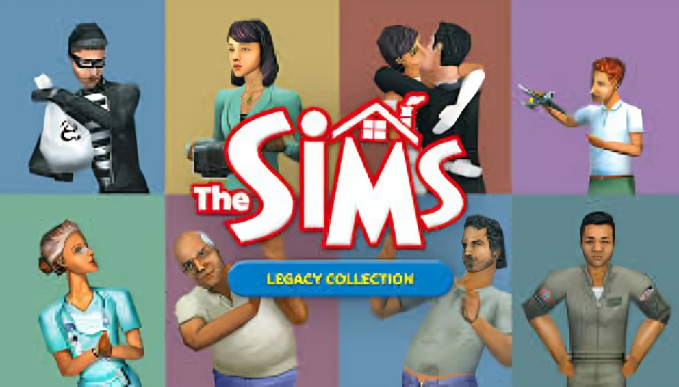
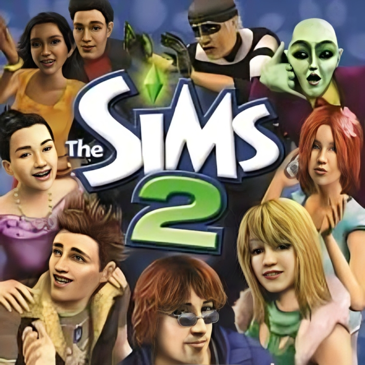

The Evolution of The Sims
The Sims series has evolved significantly over the years, introducing new features, improving graphics, and giving players more control over their Sims’ lives.


- The Sims(2000) – The first life simulation game where players could control virtual people.
- The Sims 2 (2004) – Introduced aging, genetics, aspirations, and more detailed interactions
- The Sims 3 (2009) – Featured an open-world concept with seamless neighborhood exploration.
- The Sims 4 (2014)– Focused on emotions, personality depth, and unique expansion packs
Why Did the Sims 4 Remove the Open World?
Unlike the Sims 3, which had an open-world concept, The Sims 4 introduced neighbourhood-based worlds to improve performance and stability. This made loading times shorter and allowed for more detailed Sims interactions.
Fun Facts About The Sims 4
- Sims have emotions taht affect their behaviour.
- The Sims 4 has had over 13 expansion packs since its release.
- The agme is constantly updated with free content, including new traits and objects.